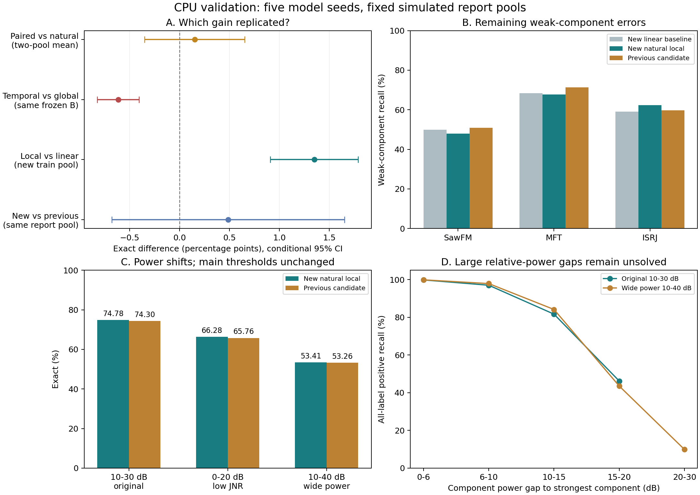

训练完成于2026-11-04T16:07:07+08:00，耗时84.68分钟；50个新模型、1200轮、300000实际优化器步。710组指标重放、20份校准决策及源代码、数据和报告顺序审计通过。当前复核再次检查所有冻结权重、源码和数据哈希，未修改训练、阈值或选型。
稳定收益来自普通非线性局部头。配对数据的额外收益未被独立复现；当前时序注意力头低于全局头；新权重尚未证明稳定超过上一轮候选。
五种子均值为五个独立测评模型，非五模型预测集成。Exact为整组标签完全正确率；不同测试池间不直接相减。
| 新身份池 | 普通局部头Exact | 配对BCE Exact | 差值pp | 条件95%区间pp |
|---|---|---|---|---|
| repA | 73.740% | 74.033% | +0.293 | [-0.267, +0.852] |
| repB | 74.792% | 74.802% | +0.010 | [-0.604, +0.623] |
先在相同模型种子内平均两份数据：配对额外收益+0.151pp，区间[-0.351, +0.653]。不能将共享backbone的两个数据池当成10个独立种子。
check阶段已选择natural：repA配对Exact下降0.298pp；repB虽然提高0.694pp，但SawFM弱召回下降5.283pp，MFT误报率增加1.008pp，超过门槛。报告未用于改选。补充配对边留出报告上，配对相对普通局部头Exact分别下降0.801和0.072pp。
原因分析属于推断：本轮配对采样保证一个成分的增删，但没有专门提高弱分量密度。自然训练池弱正例占22.73%；repA/repB配对训练的分量弱正例仅21.52%/21.73%，目标正侧约21.93%/23.25%为弱例。25%训练视图由3648条相关配对视图反复抽取，同时减少自然身份曝光。它不是已验证有效的弱分量增强策略。
| 局部头 | 可训练参数 | 同池Exact |
|---|---|---|
| global32 | 4227 | 73.284% |
| global33 | 4359 | 72.996% |
| temporal | 4323 | 72.669% |
时序头相对global32下降0.615pp，条件95%区间[−0.824,−0.406]，五种子全部下降；global33也未优于global32。当前实验不支持增加该注意力头。
不能推断时间信息没有价值：该头没有新增位置编码，仅对已含上下文的时间位置加权；普通全局头使用原模型经过均值/标准差统计及已训练投影后的128维特征。此次比较验证的是这一具体读出方式，不是所有时序结构。时序头最后6轮check AP变化很小，也不支持先简单增加训练轮数。
| 方法 | Exact | Macro F1 | Macro AP | 平均FPR |
|---|---|---|---|---|
| 新B原分类器＋固定FMB | 73.036% | 94.557% | 98.679% | 3.202% |
| 新B＋重训线性头＋固定FMB | 73.433% | 94.703% | 98.755% | 3.441% |
| 新B＋线性头＋普通局部头＋固定FMB | 74.782% | 94.874% | 98.864% | 3.039% |
| 上一轮配对候选，权重固定、按同一新校准规则拟合阈值 | 74.296% | 94.793% | 98.822% | 3.491% |
普通局部头相对自己的线性基线提高1.349pp，区间[+0.910,+1.789]，五种子均正向，并通过预设门槛。
相对上一轮候选，同池只提高0.486pp，区间[-0.678,+1.650]，4/5种子正向；没有达到0.5pp及区间下限为正的要求。不能把74.78%与上一轮不同报告池73.46%直接相减，也不能宣称新模型已经稳定超过旧候选。
| 目标 | 线性基线弱召回 | 局部头弱召回 | 基线FPR | 局部头FPR | 基线弱AP | 局部头弱AP |
|---|---|---|---|---|---|---|
| SawFM | 49.868% | 47.895% | 4.839% | 3.367% | 68.956% | 71.445% |
| MFT | 68.319% | 67.672% | 4.919% | 4.062% | 81.419% | 83.885% |
| ISRJ | 59.062% | 62.388% | 6.613% | 6.532% | 72.337% | 74.829% |
主要收益是误报减少及ISRJ边界改善，弱召回尚未全面提高。每4032条报告信号，平均SawFM误报减少29.2个但漏报增加15.2个；MFT误报减少17.0个但漏报增加5.2个；ISRJ漏报减少17.6个。三个目标弱AP均提高约2.5pp，说明排序有所改善；SawFM/MFT在逐类F1决策下仍有漏检权衡。
相对旧候选，新普通局部头弱召回为SawFM47.89%对50.83%、MFT67.67%对71.34%、ISRJ62.39%对59.74%。平均FPR为3.04%对3.49%。校准误报预算辅助规则下，新方案Exact为74.69%、旧候选73.93%，但实际报告FPR分别3.18%和2.97%；这不能被解释为严格相同测试误报率的召回比较。
| 独立分布 | 新局部头Exact | 旧候选Exact | 新局部头三目标弱召回 |
|---|---|---|---|
| 原10–30dB | 74.782% | 74.296% | 59.318% |
| 低JNR 0–20dB | 66.285% | 65.759% | 58.834% |
| 宽功率10–40dB | 53.408% | 53.264% | 38.204% |
所有功率偏移报告沿用原分布校准阈值。新方案在原分布功率差15–20dB的分量召回为46.22%；宽功率报告中20–30dB差距有1369个正分量，召回仅9.89%。原训练分量均为10–30dB，未覆盖20dB以上功率差。当前主要泛化问题是大功率差下的弱分量辨识，不能通过整体AP接近99%来判断已经解决。
保留普通非线性局部头作为结构基线，同时保留旧候选权重作参照。优先固定两套logits，用更大的独立校准池检查SawFM/MFT的误报—漏检权衡，并按功率差分层报告；只有校准仍无法改善弱分量排序时，再做小比例、按目标相对功率分层的配对对照。时序注意力、扩大当前配对比例和额外margin的优先级降低。下一轮报告身份需重新生成；本轮报告已用于分析，不能继续作盲测选择。
适用限制：同一Python物理仿真器，固定旧FMB分支；五种子区间是固定数据池下的条件统计，次要比较未做多重检验校正。功率偏移测试不等于真实采集数据验证。
